0x44 → 0x04
0x44 → 0x46
0x20 → 0x60
rampa (11 medidas)
brilho 26.85 (ref 20.9)
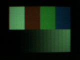
0x20 → 0x00
rampa (6 medidas)
0x20 → 0x30
0x20 → 0x28
0x20 → 0x60
rampa (10 medidas)
brilho 26.66 (ref 20.9)
0x20 → 0x00
rampa (6 medidas)
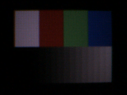
0x20 → 0x30
0x20 → 0x28
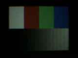
0x20 → 0x60
rampa (11 medidas)
brilho 30.68 (ref 20.9)
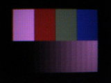
0x20 → 0x00
rampa (9 medidas)
brilho 16.17 (ref 20.9)
0x20 → 0x30
rampa (3 medidas)
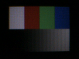
0x20 → 0x28
0x02 → 0x82
rampa (16 medidas)
0x02 → 0x42
rampa (13 medidas)
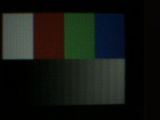
0x02 → 0x22
rampa (9 medidas)
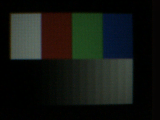
0x02 → 0x12
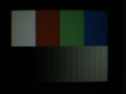
0x02 → 0x03
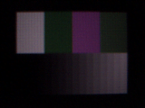
0x01 → 0x81
rampa (13 medidas)
0x01 → 0x41
rampa (9 medidas)
0x01 → 0x00
0x0a → 0x8a
cor (16 medidas)
rampa (12 medidas)
brilho 0.00 (ref 20.9)

0x0a → 0x4a
rampa (12 medidas)
brilho 1.84 (ref 20.9)
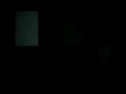
0x0a → 0x2a
rampa (12 medidas)
brilho 7.78 (ref 20.9)
0x0a → 0x1a
rampa (12 medidas)
brilho 13.02 (ref 20.9)
0x0a → 0x02
rampa (16 medidas)
brilho 27.76 (ref 20.9)
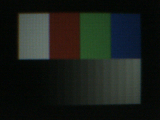
0x0a → 0x0e
rampa (5 medidas)
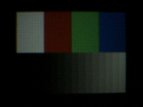
0x28 → 0x08
rampa (16 medidas)
brilho 62.74 (ref 20.9)
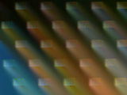
0x28 → 0x38
rampa (14 medidas)
brilho 53.15 (ref 20.9)
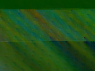
0x28 → 0x20
rampa (16 medidas)
brilho 75.70 (ref 20.9)
0x28 → 0x2c
rampa (16 medidas)
brilho 52.80 (ref 20.9)
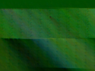
0x28 → 0x2a
rampa (14 medidas)
brilho 56.36 (ref 20.9)
0x28 → 0x29
rampa (16 medidas)
brilho 82.17 (ref 20.9)
0x1e → 0x0e
brilho 43.18 (ref 20.9)
0x1e → 0x16
0x68 → 0x78
cor (16 medidas)
rampa (16 medidas)
brilho 107.69 (ref 20.9)
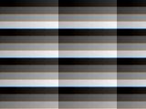
0x68 → 0x60
cor (16 medidas)
rampa (14 medidas)
brilho 46.11 (ref 20.9)
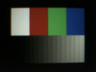
0x68 → 0x6c
0x9f → 0x1f
rampa (14 medidas)
brilho 30.41 (ref 20.9)
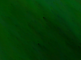
0x9f → 0xbf
rampa (14 medidas)
brilho 24.90 (ref 20.9)
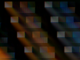
0x9f → 0x8f
rampa (14 medidas)
brilho 35.58 (ref 20.9)
0x9f → 0x9d
rampa (13 medidas)
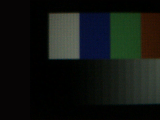
0x9f → 0x9e
0x20 → 0x22
0x20 → 0x21
cor (15 medidas)
rampa (14 medidas)
brilho 39.00 (ref 20.9)
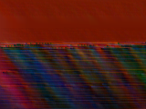